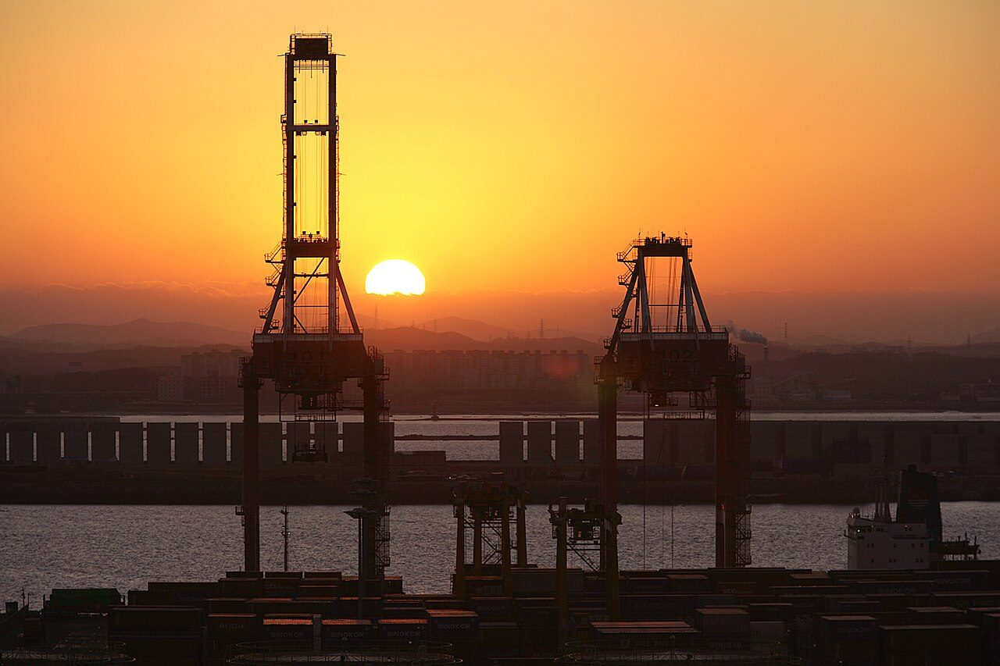
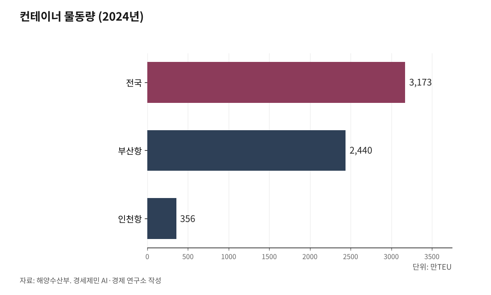

서해안벨트 핵심축 인천발 서해선 KTX③-중
AI경세제민=김갑봉 기자 | [화물편] 서해선, 처음부터 화물을 품고 태어난 노선

서화성 컨테이너야적장 6만TEU·안중 철강, 이미 화물열차가 굴러가고 있다
삼성 반도체·기아 완성차·현대제철, 서해선 연선에 줄줄이 선 공장들
인천항 356만TEU, 부산 다음 2위 항만에 배후 철도가 없다
상편에서 한국 철도화물의 추락을 진단했다. 분담률 1.3%, 9년간 46.8% 감소, 2000만톤 선 붕괴. 독일 20%와 비교하면 정책의 실패가 분명했다.
그런데 장항선 144만톤이 보여 줬듯, 서해안에 화물 수요는 있다. 중편에서는 그 수요 위에 서해선이 어떤 철도를 깔고 있는지, 동시에 어디에 구멍이 뚫려 있는지를 살펴본다.
국토부가 설계도에 EL8000을 넣은 이유
서해선은 처음부터 화물을 품고 태어난 노선이다. 국토교통부가 2010년 서해선 기본계획을 수립할 때 밝힌 목적은 명확했다. "경부선에 집중된 물동량을 분산 처리"하겠다는 것이다.
말뿐이 아니었다. 국토부 정책자료에는 "여객용 전동열차(EMU)와 함께 EL8000 전기기관차 화물열차 운행 계획"이 명시돼 있다. EL8000은 코레일의 주력 전기기관차다. 화물열차를 끌도록 설계된 기관차다. 여객 전동열차만 다니는 노선이었다면 EL8000을 설계도에 넣을 이유가 없다.
홍성~서화성 구간 89.2km의 사양을 보자. 복선전철, 설계속도 230km/h(향후 270km/h 상향 가능), 교류 2만5000볼트(V) 60헤르츠(Hz). 고속화 간선철도 규격이다.
일반철도 표준활하중(LS-22)을 적용해 화물열차의 축중을 견딜 수 있다. 고속화 복선전철 특성상 평면 건널목 없이 설계됐다. 화물열차 운행 금지 규정도 없다.
여기서 한 가지 구분이 필요하다. 서해선은 크게 두 구간으로 나뉜다.
북부(대곡~원시)는 수도권 전철 구간이다. 설계 최고속도 120km/h, 설계 축중 18톤(EL-18 표준활하중)의 전동차 전용선이다. 대부분 지하 구간이고 대피선이 거의 없다. 이 구간에서는 화물열차가 다닐 수 없다. 축중 제한과 지하 구간 특성 때문이다.
화물이 다니는 곳은 남부 간선철도 구간(서화성~홍성)이다. 2024년 11월 2일 개통했다. 이 구간이 서해선 화물의 무대다.
원시~서화성 빠진 고리(신안산선 6공구 공용)가 2025년 개통되면 북부 전철 구간과 남부 간선 구간이 선로로 연결된다. 다만 화물열차는 여전히 남부 구간만 이용한다.

서화성 컨테이너야적장 6만TEU, 안중 철강 — 이미 화물 배차가 잡혀 있다
설계도에 있던 계획이 현실이 됐다. 2025년 6월 20일, 코레일은 서화성역 컨테이너야적장(CY)의 본격 영업을 시작했다.
규모부터 보자. 부지 면적 4만8000㎡, 일시장치 능력 3136TEU, 연간 처리 목표 6만TEU다. 경기 서남부와 충남 대산지역의 수출입 컨테이너 물동량을 처리한다.
서화성역에서 부산신항·부산진역까지 컨테이너 수송열차가 하루 왕복 2회 운행한다.
안중역은 더 일찍 시작했다. 2024년 11월 2일 서해선 개통과 동시에 화물 취급을 시작했다. 직영역으로 22명이 근무한다. 안중역에서 울산 용암역까지 철강 수송열차가 하루 왕복 1회 운행한다. 안중역에서도 부산신항·부산진역까지 컨테이너 화물열차가 상하행 각 2회 다닌다.
합산하면 하루 최소 왕복 3편(컨테이너 2회, 철강 1회)이 상시 화물 배차로 잡혀 있다.
현재 계획은 선로 용량의 일부만 사용하는 초기 단계다. 서해선 남부 구간의 정확한 선로용량 수치는 공개되지 않았다. 그러나 2024년 11월 개통 후 여객열차(ITX-마음)와 화물열차가 함께 다니고 있고, 야간(22~06시) 추가 화물열차 투입 여지가 상당하다.
향후 KTX-이음이 본격 운행하면 빠른 여객열차와 느린 화물열차 간 경합이 생길 수 있다는 지적도 있다. 이는 선로용량 관리의 과제이지, 화물열차를 배제할 근거는 아니다.
삼성 반도체·기아 완성차·현대제철, 서화성 컨테이너야적장 반경의 산업 지형
서화성역 컨테이너야적장이 왜 그 위치에 있는지를 이해하려면 지도를 펴야 한다. 서화성역은 화성시 남양읍에 있다. 이 역을 중심으로 반경 30~50km에 한국 제조업의 심장부가 펼쳐져 있다.
삼성전자 화성캠퍼스. 반도체 생산라인이 집적된 거대 단지다. 서화성역에서 가장 가까운 대형 산업시설 중 하나다. 삼성전자 기흥캠퍼스도 같은 화성시에 있다.
평택시로 내려가면 삼성전자 평택캠퍼스가 있다. 세계 최대 규모의 반도체 공장이다. 고덕 브레인시티까지 합하면, 화성~평택 일대는 세계 반도체 산업의 최대 밀집 지역 중 하나다.
기아 화성공장. 완성차 생산 거점이다. 서화성역과 같은 화성시 내에 있다. 아산시로 내려가면 현대자동차 아산공장이 있다. 완성차와 자동차 부품은 컨테이너 물류의 주요 품목이다.
당진시에는 현대제철 당진제철소가 있다. 안중역에서 울산까지 철강 수송열차가 다니는 이유다. 서산시 대산읍에는 석유화학단지가 있다. 이 두 산업시설의 화물 수요가 장항선·서해선 화물의 배경이다.
화성시 향남에는 제약·바이오단지가 조성돼 있다. 시흥시와 안산시에 걸친 시화·반월국가산업단지는 국내 최대 규모 산업단지 중 하나다.
인천투데이(2025.7.21.)는 이 상황을 이렇게 짚었다. "경기도 평택-화성 일대 반도체 산업단지, 충남 아산 디스플레이 산업단지 등 주요 산업지역이 철도와 단절돼 있다."
서화성 컨테이너야적장과 안중역 화물시설은 이 산업 지형의 한가운데에 놓여 있다. 반도체·완성차·철강·석유화학·제약이 만들어 내는 물동량이 서해선 화물의 잠재 수요다.
개별 공장의 연간 물동량은 기업 비공개 자료로 정확히 확인할 수 없다. 그러나 이 산업단지들이 도로에만 의존해 왔다는 사실, 서해안고속도로와 평택시흥고속도로의 극심한 정체가 그 결과라는 사실은 분명하다. 서화성 컨테이너야적장 6만TEU는 시작에 불과하다.
평택항선·석문산단선·군산항선 — 서해안 화물 네트워크의 뼈대
서해선 화물의 의미는 서화성역이나 안중역 하나에 그치지 않는다. 서해선을 축으로 서해안 전체에 화물철도 네트워크가 깔리고 있다.
2024년 11월 2일, 서해선(홍성~서화성)과 동시에 개통한 노선이 있다. 평택선이다. 경부선 평택역에서 서해선 안중역까지 22.8km를 전철화한 노선이다. 국토부는 평택선의 목적을 "경부축에 집중된 화물 물동량 분산"으로 밝혔다.
서해선·평택선·경부선이 삼각형으로 연결되면서, 서해안 화물이 경부선으로 직결되는 경로가 열렸다. 안중역의 화물열차가 부산신항·울산까지 가는 경로가 바로 이 삼각 연결이다.
석문국가산단 인입철도도 공사 중이다. 장항선 합덕역에서 석문국가산업단지까지 31.2km 단선 전철을 깔고 있다. 2022년 착공, 2027년 완공 예정이다. 사업비 1조719억원, 예비타당성조사 면제 사업이다. 당진 현대제철과 서산 대산석유화학단지의 화물 수요가 이 노선의 배경이다.
장기적으로 석문 인입철도를 남쪽으로 연장해 대산항까지 잇는 구상(대산항선)도 있다.
군산항선은 이미 운영 중이다. 장항선 대야역에서 분기해 군산항까지 연결한다. 군산자유무역지역의 화물을 처리한다.
이 노선들을 지도에 놓으면 그림이 보인다. 서해선이 남북 축이다. 홍성에서 장항선과 만나고, 안중에서 평택선으로 경부선에 접속한다. 장항선에서 석문산단선과 군산항선이 갈라져 나가 당진·서산·군산의 항만과 산업단지에 닿는다.
서해선·장항선·평택선·석문산단선·군산항선이 하나의 네트워크로 연결되면, 당진·석문·평택항·포승·군산이 철도로 직결된다.
상편에서 확인한 장항선 144만톤(컨테이너 62만톤, 철강 82만톤)이 이 네트워크에 합류한다. 새로 만드는 수요가 아니라, 이미 존재하는 수요를 더 효율적으로 연결하는 작업이다.
356만TEU, 부산 다음인데 철도가 없다
서해안 화물 네트워크에 가장 큰 구멍이 있다. 인천항이다.
인천항은 부산항 다음으로 컨테이너를 많이 처리하는 항만이다. 2024년 컨테이너 물동량 356만TEU, 역대 최대를 기록했다. 전국 컨테이너 3173만TEU 중 부산항이 2440만TEU(1위), 인천항이 356만TEU(2위)다.
2017년에 300만TEU를 돌파한 뒤 꾸준히 늘었다.
인천항의 성격은 부산항과 다르다. 부산항이 환적(다른 나라로 옮겨 싣는 물류) 중심이라면, 인천항은 수출입 직교역 중심이다. 수입 177만TEU, 수출 174만TEU로 거의 균형을 이룬다. 환적은 5만TEU에 불과하다.
국가별 수출 비중을 보면 중국이 66.0%로 압도적이다. 베트남 8.4%, 대만 3.6%가 뒤를 잇는다. 수도권 제조업의 대중국 수출입 관문이자, 한중 차량도선(카페리)·환황해 단거리 노선의 중심항이다.
그런데 이 항만에 배후 철도가 없다. 과거에는 있었다. 경인선에서 인천항까지 화물 전용 철도(인천내항선)가 운영됐다. 도시 개발과 수인선 복선전철화 공사 과정에서 흔적이 완전히 사라졌다.
현재 인천항의 컨테이너와 차량도선 화물은 대부분 트럭으로 처리된다. 연 356만TEU가 전부 도로로 빠져나간다. 경인고속도로 정체를 가중시키는 원인 중 하나다.
인천신항선, 20년 넘게 계획만 반복되는 이유
인천항에 배후 철도를 깔겠다는 계획은 오래전부터 있었다. 인천신항 인입선이다. 수인분당선 월곶역에서 인천신항까지 13.2km를 잇는 노선이다.
이 노선의 위상 변화가 한국 철도 정책의 우선순위를 보여 준다. 제3차 국가철도망구축계획(2016년)에서는 신규 추진사업으로 포함됐다. 제4차 국가철도망구축계획(2021~2030)에서는 "추가검토사업"으로 격하됐다. 정식 사업에서 후보 사업으로 밀려난 것이다.
인천시는 제5차 국가철도망구축계획에 이 노선을 다시 넣어 달라고 요청했다. 인천시가 국토부에 제출한 우선 3대 노선은 제2공항철도, 서울2호선 청라 연장, 인천신항 인입선이다. 2026년 2월 현재 제5차 계획은 확정되지 않았다. 인천신항선의 최종 포함 여부는 미정이다.
20년 넘게 계획과 격하를 반복하는 동안, 다른 서해안 항만은 배후 철도를 확보했다. 평택·당진항은 평택항선이 2024년 개통돼 운영 중이다. 군산항은 군산항선이 이미 운영 중이다. 대산항은 석문국가산단 인입철도가 공사 중이고, 이를 남쪽으로 연장하는 대산항선 구상이 있다.
국내 2위 컨테이너 항만에 배후 철도가 없고, 4위 평택항과 하위 군산항에는 있다. 이 격차는 인천항의 물동량이 적어서가 아니다. 정책 우선순위의 문제다.
수도권 전략 산단도 철도 공백 — 시화·반월, 삼성 평택, 화성 향남
인천항만 그런 것이 아니다. 수도권 서해안의 주요 산업단지 대부분이 화물 철도와 단절돼 있다.
시화·반월국가산업단지. 시흥시와 안산시에 걸쳐 있는 국내 최대 규모의 국가산업단지 중 하나다. 화물 전용 인입선이 없다. 물류는 서해안고속도로와 평택시흥고속도로에 의존한다.
삼성전자 평택캠퍼스. 세계 최대 규모의 반도체 공장이다. 기흥캠퍼스, 화성캠퍼스, 고덕 브레인시티까지 합하면 경기 남부 반도체 벨트를 형성한다. 화물 전용 인입철도는 없다.
화성 향남 제약·바이오단지. 전용 인입선이 없다.
수도권 서해안의 전략 거점이 모두 도로에만 의존하는 구조다. 이 산업단지들이 만들어 내는 물동량이 서해안고속도로와 평택시흥고속도로의 극심한 정체로 이어진다. 서해선 화물망이 이 지역까지 확장돼야 하는 이유다.
그런데 1번에서 짚었듯, 서해선 북부(대곡~원시)는 축중 18톤 전동차 전용선이다. 화물열차가 다닐 수 없다.
서해선 남부의 화물망을 인천항과 시화·반월 산단까지 연결하려면 인천신항 인입선이 필요하고, 2편에서 다룬 수인분당선~서해선 직결이 실현돼야 한다. 인천발 화물이 서해선을 이용하는 경로는 아직 열려 있지 않다. 구멍이 뚫려야 할 곳이 정확히 여기다.
하편에서는 이 구멍을 어떻게 메울 것인지, 서해선 화물을 살리기 위한 구체적 대안을 살펴본다.
참고문헌
"서해선(홍성~송산) 건설사업 기본계획", 국토교통부, 2010.12.22.
"서해선·평택선·장항선 3개 노선 동시 개통", 정책브리핑, 2024.11.1.
"한국철도, '서화성역 물류시설' 영업 개시", 연합뉴스·코레일, 2025.6.24.
"코레일, 서화성역 물류시설 본격 가동으로 연 6만TEU 처리", 중앙이코노미뉴스, 2025.6.25., https://www.joongangenews.com/news/articleView.html?idxno=429150
"안중역 화물 취급 현황", 나무위키(정보공개포털 자료 인용), 2024.10.8.
"인천항 2024년 역대 최대 컨테이너 물동량", 인천항만공사, 2025.2.2.
"2024년 국내 항만 역대 최대 컨테이너 물동량 3173만TEU 처리", 해양수산부, 2025.1.24., https://www.mof.go.kr/doc/ko/selectDoc.do?docSeq=60146
"[제5차 국가철도망⑥] 기후위기 시대 철도에서 사라진 화물", 인천투데이, 2025.7.21., https://www.incheontoday.com/news/articleView.html?idxno=305604
"경기평택항만공사, 평택항 컨테이너 물동량 역대 최대 실적 달성", 경기뉴스, 2026.1.28., https://www.kgnews.co.kr/news/article.html?no=882753
"노선별 화물수송실적(연도)", 철도산업정보센터, 2023년 조회, http://www.kric.go.kr/jsp/industry/rss/raillinecargoitemList.jsp?q_fdate=2023
※ 이 기사는 AI 프로그램 클로드를 활용해 작성했습니다.
사진 출처
· [대표사진] Gyeonggi Province (경기도), "Port of Pyeongtaek-Dangjin (South Korea) 평택당진항.jpg", 위키미디어 공용, 공공누리 제1유형, https://commons.wikimedia.org/wiki/File:Port_of_Pyeongtaek-Dangjin_(South_Korea)_%ED%8F%89%ED%83%9D%EB%8B%B9%EC%A7%84%ED%95%AD.jpg
※ 이 기사는 인공지능을 활용해 작성했습니다.
관련기사
저작권자 © AI경세제민 무단전재 및 재배포, AI학습 및 활용 금지